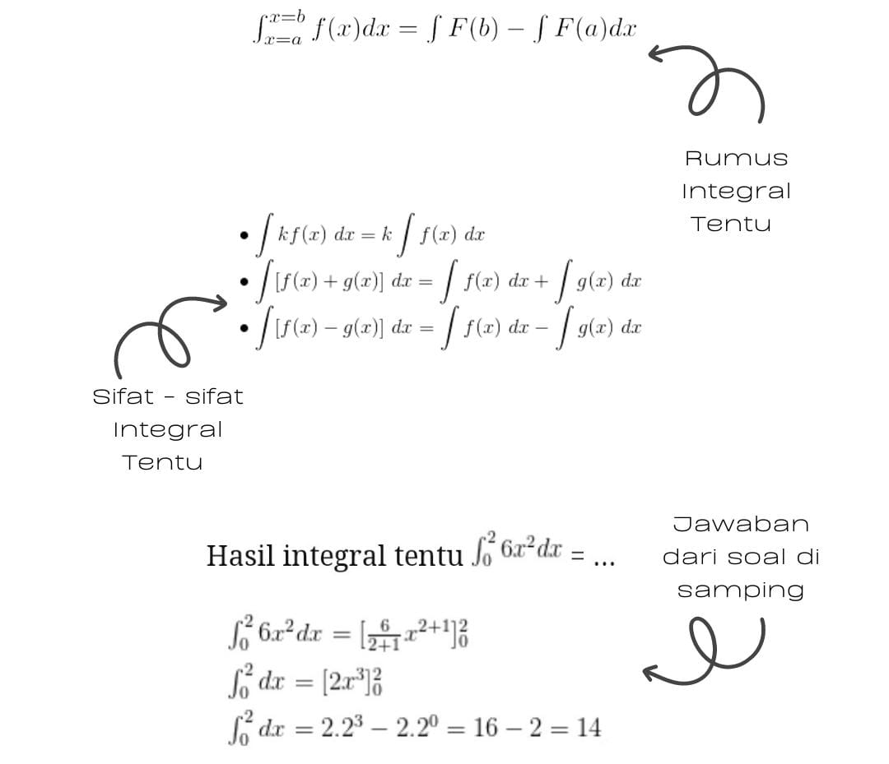
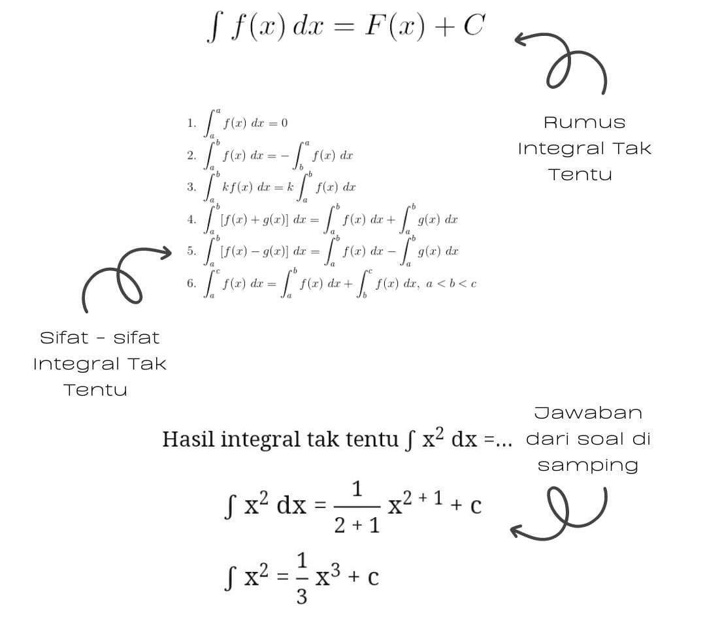

Belajar INTEGRAL bersama Rana dan Lana
Let's get rid of the stigma that math is the most DIFFICULT and FEARED subject
Apa sih yang dimaksud dengan Integral?
Integral adalah sebuah konsep penjumlahan secara berkesinambungan dalam matematika. Integral dan inversnya, diferensiasi, adalah operasi utama dalam kalkulus. Integral dikembangkan menyusul dikembangkannya masalah dalam diferensiasi, yaitu matematikawan harus berpikir bagaimana menyelesaikan masalah yang berkebalikan dengan solusi diferensiasi.
Integral terbagi menjadi 2, yaitu, Integral Tentu dan Integral Tak Tentu
Pengertian, Rumus, Sifat dan Contoh Soal
Integral Tentu adalah bentuk integral yang variabel integrasinya memiliki batasan. Batasan tersebut biasanya disebut sebagai batas atas dan batas bawah. Batas variabel integrasi umumnya ditulis di bagian atas dan bawah notasi integral.
Karena variabel integrasinya memiliki batas, maka hasil integral tentu merupakan suatu bilangan yang pasti dan bukan merupakan penyelesaian umum seperti halnya Integral Tak Tentu.
Pengertian, Rumus, Sifat dan Contoh Soal
Integral tak tentu atau antiturunan atau antiderivatif adalah suatu bentuk operasi pengintegralan suatu fungsi yang menghasilkan suatu fungsi baru. Fungsi ini belum memiliki nilai pasti sehingga cara pengintegralan yang menghasilkan fungsi tak tentu ini disebut "integral tak tentu"
Beberapa penerapan integral tak tentu diantaranya untuk menentukan suatu fungsi jika turunan dari fungsinya diberikan, untuk menentukan posisi, kecepatan, dan percepatan suatu benda pada waktu tertentu.
